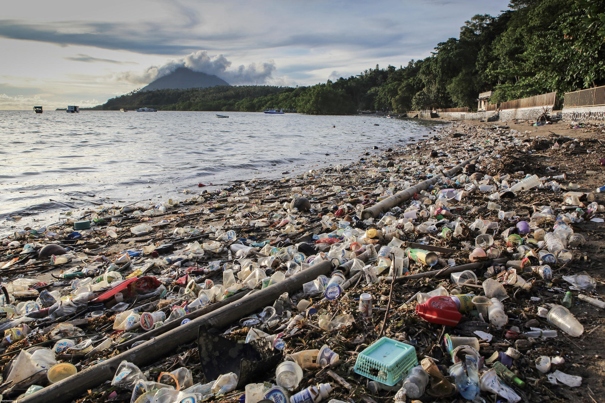
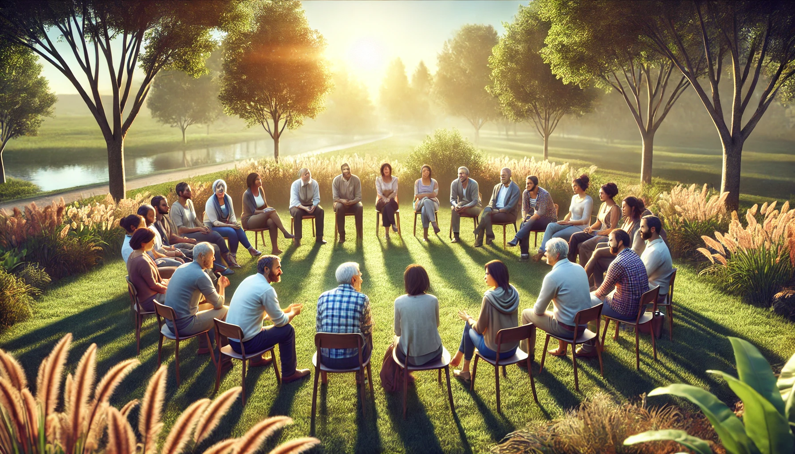

Community: Peacebuilding
Topic: Developing Dialogue Strategies for Promoting Peace
Date: February 8, 2025Uniting diverse communities and fostering a shared vision for peace and harmony across the globe.
We as a platform provide innovative approaches, cultural initiatives, and technological solutions to facilitate dialogue and cultivate common values among people of different societies. The objective is to leverage advancements in technology and global connectivity to build a foundation for universal human values, ultimately contributing to a more peaceful and cohesive world.
Purpose: Facilitate conversations between individuals, communities, and nations to promote mutual understanding. Know more...
Purpose: Encourage cultural appreciation and understanding through interactive initiatives. Know more...
Purpose: Provide resources to educate individuals about empathy, equality, and shared human values. Know more...
Purpose: Empower individuals and communities to resolve disputes and build lasting peace Know more...
Purpose: Use creative mediums to inspire global harmony and shared understanding. Know more...
Purpose: Influence global policies to reflect shared values and promote harmony. Know more...
Purpose: Address global environmental challenges while promoting values of responsibility and coexistence. Know more...
Purpose: Combat online hate and foster respectful, meaningful conversations. Know more...
Purpose: Empower the next generation to lead in fostering global harmony. Know more...
Connect, Communicate, Collaborate Across Borders
What is the most effective way to promote global harmony?
Topic: Developing Dialogue Strategies for Promoting Peace
Date: February 8, 2025Topic: Innovative Ways to Tackle Plastic Pollution in Oceans
Date: February 7, 2025Exploring new community-driven initiatives to clean coastal areas and reduce plastic waste.
Bringing communities together to foster understanding and promote global peace.
Explore real-world examples of resilience, collaboration, and hope from across the globe.
Region: Eastern Europe and Middle East
In the aftermath of regional tensions, folk dancers from Eastern Europe and the Middle East collaborated on a “Dance Beyond Borders” project. By blending traditional dances from both cultures, they created a performance that toured internationally, showcasing how shared art can transcend political divides.
The performances helped rebuild trust and promoted dialogue between their respective countries, inspiring younger generations to celebrate diversity.
Region: East Asia and North America
IA group of college students from Japan and Canada started a virtual language exchange program to practice English and Japanese. Beyond language, they shared stories, traditions, and family recipes, deepening their understanding of each other’s culture.
The program grew into an annual exchange, with students visiting each other’s countries to strengthen personal and cultural bonds.

Region: Mediterranean & Africa
Chefs from Morocco, Greece, and Turkey created a joint cookbook called “Flavors of Unity”, blending their culinary traditions to highlight common ingredients and techniques. They held joint cooking workshops across their regions.
These events fostered dialogue among attendees, demonstrating how food can serve as a unifying element across cultures.
Region: South America
Two neighboring nations with a long-standing border dispute agreed to a historic “Green Border Pact”. Instead of militarizing the contested area, they declared it a shared conservation zone. Joint patrols by both nations ensured the protection of biodiversity while fostering collaboration.
The agreement not only resolved tensions but also attracted global recognition for its innovative approach to peace and environmental stewardship.
Region: Africa
Communities from two countries bordering a large freshwater lake were in conflict over fishing rights. After months of platform-facilitated dialogue, they established a shared fishing schedule and co-managed the lake’s resources, supported by international conservation experts.
The initiative reduced illegal fishing, increased economic benefits for both sides, and fostered mutual respect and cooperation.
Region: Middle East
A youth group from two conflicting regions initiated an online peace campaign through this platform. Their efforts gathered widespread attention, pressuring leaders to engage in talks. A ceasefire agreement was eventually brokered, with youth representatives included in the discussions.
The ceasefire held for over a year, and youth leaders continue to work on rebuilding trust through education and cultural exchanges.
We'd love to hear from you! Reach out to us with your questions, feedback, or partnership opportunities.
Phone: (610) 366-7883
Address: 8911 Tanglewood Ave., Capitol Heights, MD 20743